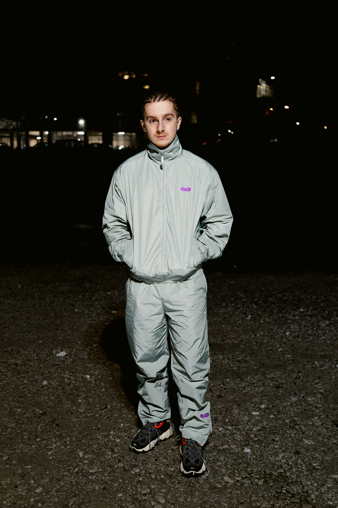
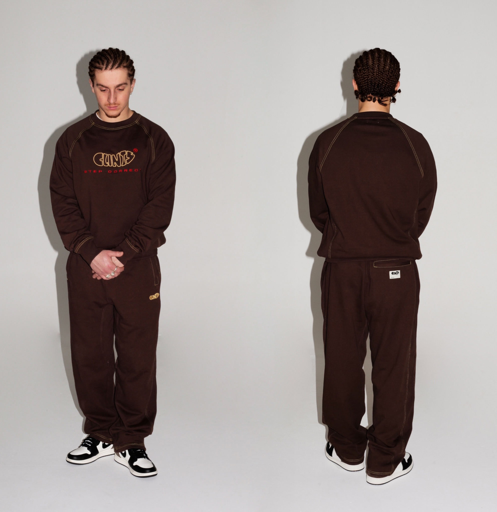
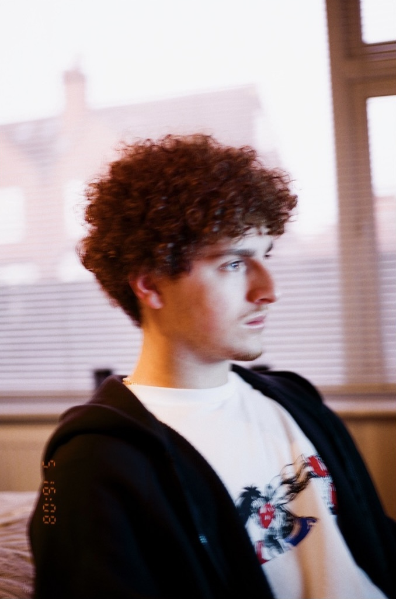

I had the opportunity to assist on a Press Release photoshoot for an artist (pictured above), which was my first professional work with photography.
Although I was an assistant, I was given multiple responsibilities including location scouting and most of the creative direction.
I've also worked with a few friend's clothing brands. Assisting the main photographer and having creative input.
I plan to continue to assist and work on similar projects as well as developing my own style and working on my own personal work.
Modelling



Through working with brands I was asked if I would model for them. Above is some work I've done for CLINTS and a friend's personal work
Since only recently starting I'm working to build up my portfolio through friends and people in the industry.
I'm aiming to get signed by an agency to further improve my skills and get access to more work.